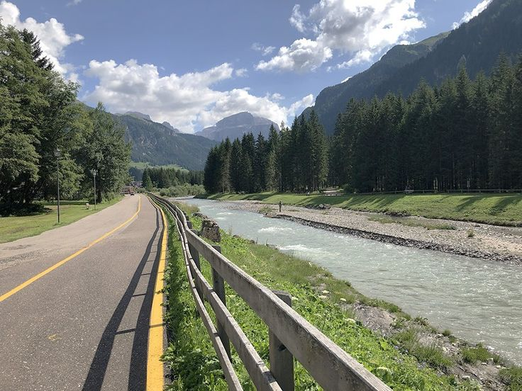

Pista ciclopedonale

Il punto di partenza della pista ciclabile Val di Fiemme e Fassa si trova a sud del paese di Molina di Fiemme,
sulla sponda sinistra del torrente Avisio che fa un po’ da apripista al percorso. Dopo averlo scavalcato per
mezzo di una passerella, si comincia la risalita della valle verso Predazzo. Per fortuna il primo tratto è quello
con la pendenza più dolce e, fino alla località Cascata, quasi non ci si accorge di essere in salita. Qui si può
fare la prima sosta della giornata per osservare il grande salto d’acqua del Rio di Val Moena, il luogo è
fresco e piacevole, l’ideale soprattutto nei mesi più caldi.
La pista ciclabile continua con alcuni saliscendi, poi si infila in un’area boschiva per raggiungere, poco dopo,
la stazione di fondovalle della funivia del Cermis, poco lontana dalla frazione di Masi di Cavalese. Si pedala
tra prati e pascoli, si passano ponti di ferro e stazioni abbandonate, testimonianze della vecchia ferrovia a
scartamento ridotto oggi riconvertita a pista ciclabile. Si attraversa il piccolo abitato di Lago di Tesero (in
caso di problemi meccanici, qui si può fare riferimento al Centro del Fondo, fornito di servizi e assistenza
per i ciclisti) per poi dirigersi verso Ziano di Fiemme. La natura e la mano dell’uomo, in questo tratto, hanno
prodotto un paesaggio fantastico che alterna campi arati, pascoli verdeggianti e curatissime foreste. Poco
prima di arrivare a Zanolin, frazione di Ziano di Fiemme, si può ammirare un ponticello di legno con
copertura a due falde, uno dei pochi in Trentino.
Seguendo il percorso dell’antica ferrovia si arriva a Predazzo che si trova quasi a metà del percorso e segna
l’inizio della parte più impegnativa. La prossima destinazione è Moena: per raggiungerla si torna a pedalare
sulle rive del torrente Avisio, in un passaggio in cui la valle si fa più stretta e conduce alla frazione di Forno.
Qui avviene lo sconfinamento in Val di Fassa: l’incantevole Moena, adagiata su una conca tra le Dolomiti e
circondata dai gruppi dolomitici del Catinaccio, del Monzoni e del Latemar, si raggiunge in salita
attraversando varie volte il torrente Alvisio. Il tratto successivo permette di tirare un po’ il fiato: Soraga,
infatti, si trova a tre chilometri di distanza, tutti in leggera discesa. La condizione ideale per ammirare uno
scorcio fantastico sulla valle con le cime del gruppo Sella e Pordoi sullo sfondo. Superato l’abitato di Soraga,
si procede per alcuni chilometri fra prati e boschi nelle vicinanze di Pozza di Fassa e per poi giungere fino al
centro del paese su strada comunale.
